install.packages(c("usethis", "gitcreds"))
library(usethis); library(gitcreds)NCEAS’ Server: Aurora
Overview
Working on NCEAS’ Server is similar to working on an entirely separate computer from the laptop or desktop computer on which you typically work. This means that you need to go through the steps of connecting GitHub to your “RStudio” again for the instance of RStudio accessed through Aurora. GitHub’s Personal Access Token is referred to as “token” hereafter for simplicity. Note that our server also runs other analytical tools such as JupyterHub for python users.
Often the reason to engage with the server is to increase the scale of your analyses far beyond what your personal computer can handle. There are other advantages such as:
- Storage Capacity – More disk space & faster storage
- Computing Power – More CPUs & RAM (384GB!!)
- Security – Nightly backups and data are distributed across multiple drives
- Collaboration – Shared data & consistent software versions accessible to everyone on your team
Server Workflow
Before diving into the process of getting set up on and using the server, it will be helpful to briefly consider what a workflow involving the server “looks” like! When you are working on the server you will need to consider what is stored on your personal computer (bottom left), on GitHub (bottom right), and on NCEAS’ server (top).
To simplify, let’s focus on (1) where your data live and (2) where your code lives.
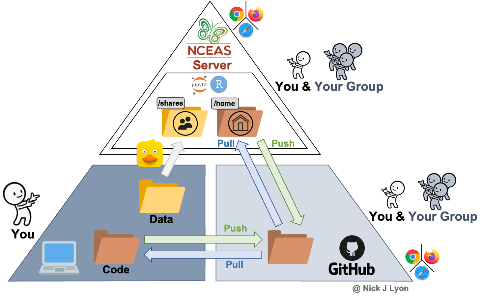
Data
Your data (or at least some of it) is likely on your personal computer. Those specific files are only accessible to you and you almost certainly have a file path to those data (i.e., levels of nested folders) that is unique to you. Even if you share the data file with someone on your team–via email or a cloud storage device–they will likely have to tweak any code that you share to ensure that the file paths are correct for their computer.
When you involve the server, all of your group’s data can live in a folder on the server within the shares folder. Only your group will have access to the data in that subfolder of shares . A huge advantage of this is that everyone in your group will now have the exact same file path to the data while working on the server.
This means that there is no chance that you can be working in the “wrong” version of the data (i.e., one that is outdated, doesn’t reflect new metadata, etc.) because everyone is using the exact same file(s) rather than emailing static copies of data that may become outdated without warning.
Code
We strongly recommend that you use GitHub to manage your code to streamline the use of either the server or your personal computer while collaborating with other group members.
If you are unfamiliar with git, it is a “version control system” that allows line-by-line tracking of changes to code. GitHub add features to git to enable multiple people to share and work on the same code which is very useful in collaborative contexts like working groups. Git and GitHub are not really meant to track or store data (though it can do this in a somewhat limited way) so notice that the yellow “Data” folder is absent from the bottom right part of the triangle. We offer an entire workshop on GitHub that we are happy to offer to your group if that is of interest so just let us know!
Assuming that you use GitHub, your code (and its history) will be preserved there. You can then write or edit code either on your personal computer or on the server. Regardless of where you make the changes, so long as you connect both your personal computer and your server profile to your GitHub account, you will have a centralized place for all of your code that is accessible to both workspaces.
Notice that on the server, your code will be in your subfolder of the home folder on the server. Only you can access this folder and you will be leveraging GitHub to share your code with others! This means that everyone in your group can have their own code files while every copy of those scripts can use the file path in the shares folder to access the data files. In other words, use GitHub to share your code stored in your home folder and your group shared folder to share data.
A final advantage in the ‘code’ realm is that the server has a consistent version of R, RStudio, and git (the program underpinning GitHub) so there is no chance that a software version difference can affect different members of your group differently.
Getting Set Up
Necessary Software
The only software that you will need on your personal computer to get set up on NCEAS’ server is RStudio!
You likely have worked in the “Console” tab of RStudio (where run lines and outputs appear; see below) but RStudio has another tab to the right of the “Console” called “Terminal” which offers RStudio users access to the command line (a.k.a. the shell). If you are a veteran command line user you may prefer to use the standalone Terminal app on MacOS or PuTTY on Windows but for the sake of keeping your tool kit streamlined, we’ll walk through getting set up on NCEAS’ server using only RStudio’s Terminal tab.
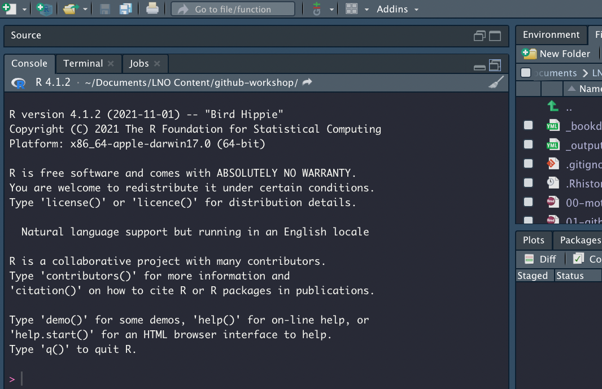
The Terminal does not accept R syntax (and the Console doesn’t accept Terminal syntax) so you may notice that some of the code we’ll walk you through below is formatted differently than you would write an R script.
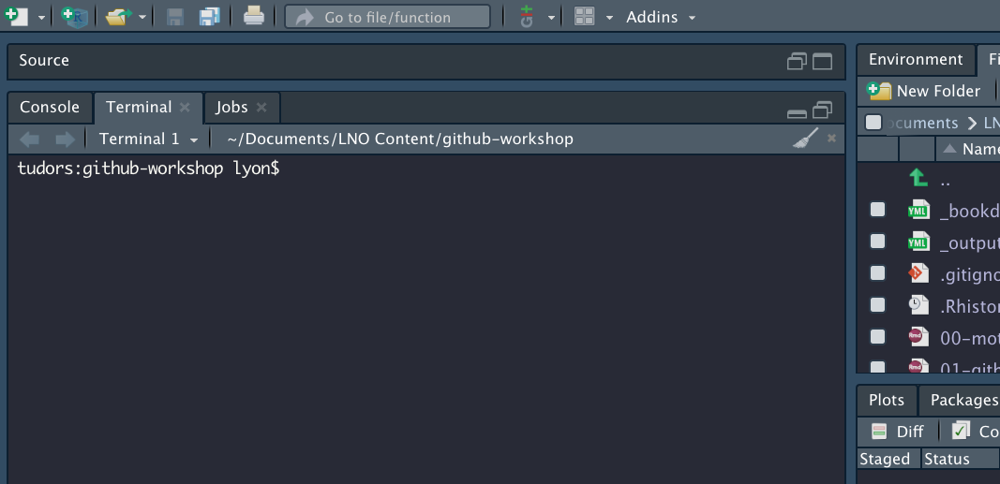
Get Invited!
In order to access the server (and follow the instructions below) we’ll need to create an account on the server for you. Please email someone on our team or scicomp@nceas.ucsb.edu so that we can contact NCEAS’ IT team and get an invite email sent to you.
In that email, please include the name and email addresses of all of your team members who want to access the server. After that information has been received, NCEAS’ IT team will create accounts for all of those people and will send you an invitation email to set up your account on the server.
An example of what that email may look like is included below but there are two key pieces of information:
- Your username
- Your temporary password (covered by a red bar in the screenshot).
If you have not received that email, check your Spam folder for emails from Thomas Hetmank (hetmank@nceas.ucsb.edu) or Nick Outin (outin@nceas.ucsb.edu). If you have not received the email and it is not in your Spam, reach out to our team and we will work to get an invite sent to you.
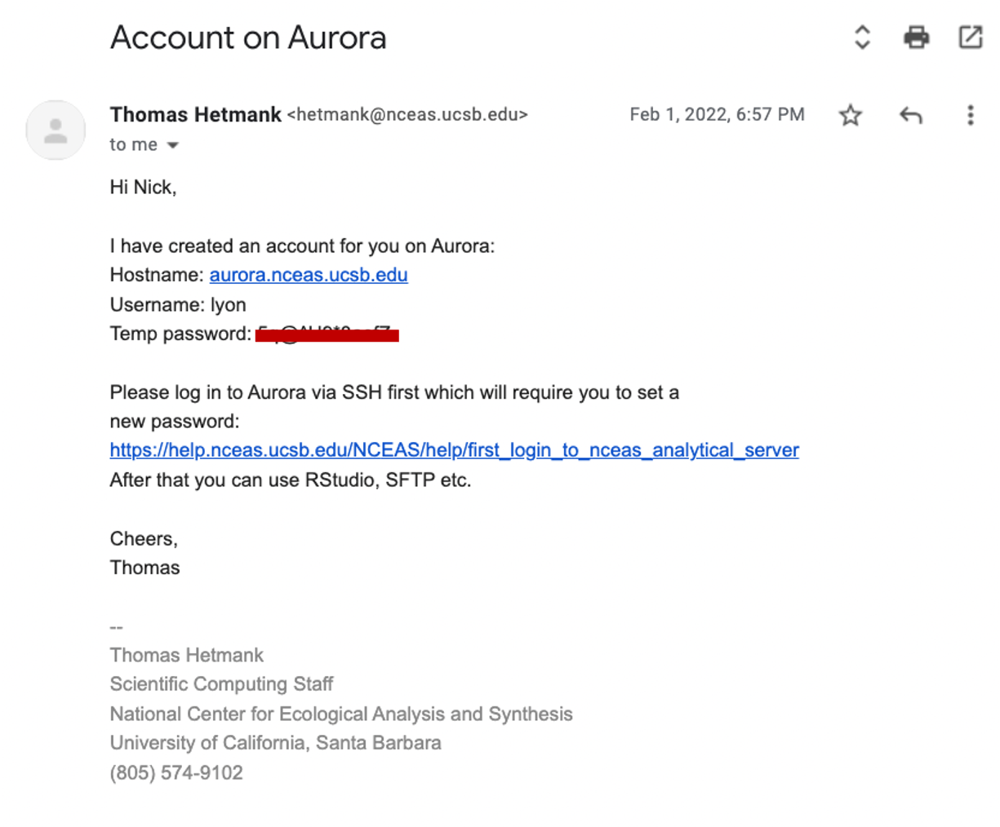
Setting your Password
Note on this Step of the Set Up
Note that you only have to set your password once! For security, when we create your account on the server we create a temporary password that can only be used once (see the invite email screenshot above). So, when you first login to the server by following the instructions below, you’ll need to create a “real” (i.e., non-temporary) password. Subsequent sign-ins to the server do not require this ‘Setting your Password’ section at all!
In the following instructions we use text formatting to explain what you should type.
- Text
like thisshould be typed into the Terminal tab of Rstudio
- Run it by pressing “enter” or “return”
- Note that typing these commands into an R script or R Markdown will not work because it will attempt to run in the Console rather than the Terminal
- Text wrapped by brackets
[like this]should also be typed in the Terminal tab BUT you should replace the text in brackets in a user-specific way that is clarified in the nearby text
Password Setting Instructions
In the Terminal pane of RStudio, you will “ssh” into the server by running the following code:
ssh [your username]@aurora.nceas.ucsb.edu. It is “@aurora” because the name of the server is Aurora.You will need to enter
yesto accept the server’s SSH key.You will then be prompted to enter your
[temporary password](see the above email example). Note that the cursor will not advance as you type but it is registering your entries! There will be no indication that you are typing (such as: “•••••••••”). This throws off many users so hopefully this note helps set your mind at ease!
Next, you will be prompted to change your “expired” password. We consider your temporary password to be expired as soon as you use it because sharing passwords via email is not secure and this “expiration” lets you set the password to something that only you know at the outset of your time in the server. Note again that the cursor will not advance as you type but it is working!
To update your password, (i) enter your
[temporary password], then (ii)[your strong new password]and finally (iii) re-type[your strong new password]to confirm it. Note that your new password should not be “your strong new password”You are all set up! Run
exitto log out of the server in the Terminal tab.
Accessing the Server
- Use your favorite web browser (e.g., Firefox, Chrome, etc.) to access Aurora at aurora.nceas.ucsb.edu and click “Login to RStudio Server”
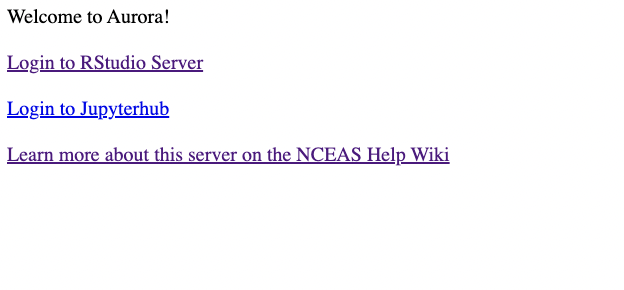
- Sign in with your username and the password that you created in the “Getting Set Up” section of this tutorial.
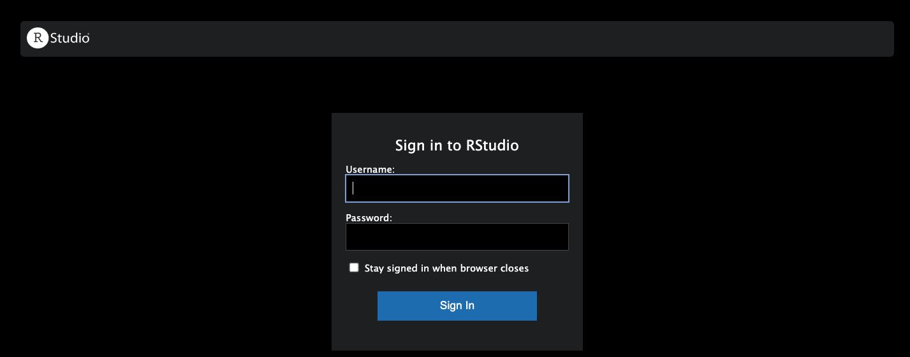
You should now be in something that looks very much like RStudio but is housed in a tab on your browser!
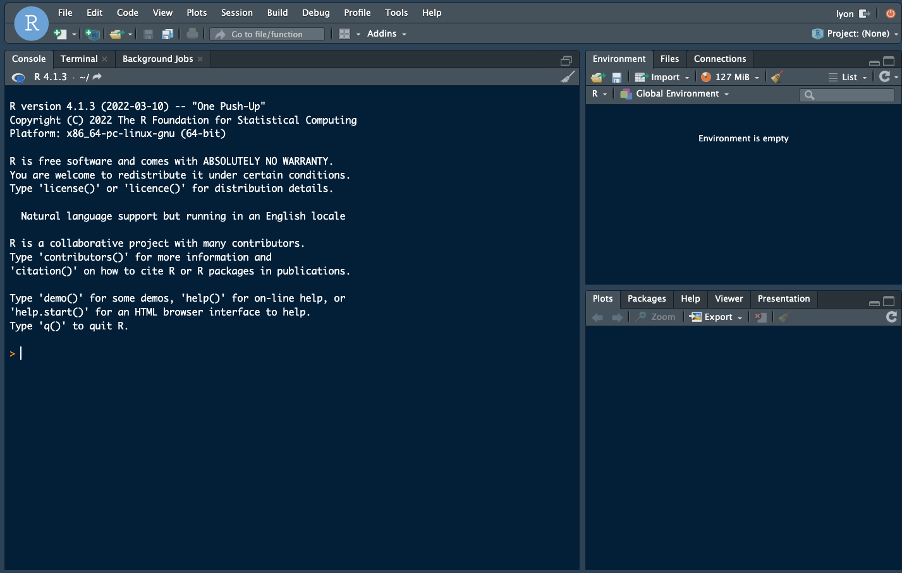
If the above steps have not resulted in successfully accessing Aurora, consult NCEAS’ instructions on first login and/or SSH-specific instructions for Mac vs. Windows and/or email us!
Connecting GitHub
As stated at the beginning of this tutorial, we cannot overstate how strongly we suggest integrating GitHub into your collaborative coding process. We are happy to work through our GitHub tutorial if that is of interest though you may find walking through the materials at your own pace helpful even without a formal workshop!
When setting up git/GitHub on your personal computer, you normally have to install R, RStudio, git, and make an account on GitHub. When working on the server, R, RStudio, and git are already successfully installed and ready for you to use. So, to begin connecting your server profile with GitHub you need only follow these steps:
Create a GitHub account using the web browser of your choosing.
Install and load the
usethisandgitcredspackages
- Tell the server your GitHub username and email
usethis::use_git_config(user.name = "Your GitHub Username",
user.email = "Your GitHub Email")4A. Create a Personal Access Token (PAT) on GitHub for your server profile. Note: running the below line of code will open a browser window for you to create a token on GitHub! For additional information, see GitHub’s PAT Tutorial or the Happy Git with R PAT Tutorial.
usethis::create_github_token()
## Be sure to copy the token when you're done!!!
## It will be a long string of letters and numbers4B. Before you navigate away from the token page, copy the token and paste it somewhere safe for the rest of these setup instructions. If you close or leave the window without copying the token, you will not be able to see the token again so you’d have to make a new one to complete the next step.
- Next, give your server profile the token you just created! Running the below line of code will prompt you to paste your token into the Console and hit enter. Note that your token should not be in quotes when you give it to the Console.
gitcreds::gitcreds_set()At the end of the above steps your token should be set! You should now be able to interact with code that you can access on GitHub directly from the server.
- Finally, in the Terminal pane of RStudio you need to tell the server to “remember” your token for some set amount of time.
git config --global credential.helper 'cache --timeout=10000000'The timeout bit of that argument is the amount of time in minutes you want your token to be remembered. You can’t set it to remember your token forever so 10 million minutes (just over 19 years) should be long enough that you don’t need to worry about this again.
Uploading Data
Via RStudio
If you are uploading a single file, it may be most convenient to use RStudio’s data upload capabilities. In the “Files” pane (default is top right but it may differ on your computer), you can click the button that is a white rectangle with a yellow circle with an upward facing arrow inside of it. In the below image the relevant button is in a red square.
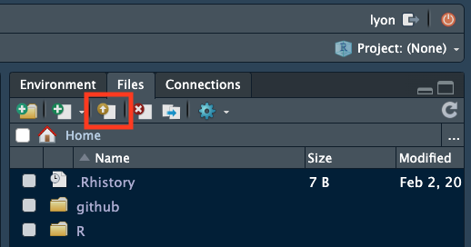
Clicking that button allows you to choose (1) where you want the uploaded file to go and (2) which file you want to upload.
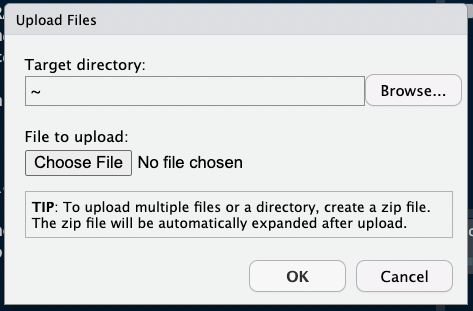
You can also download data via the RStudio interface. To download a file, check the box next to it in the “Files” pane.
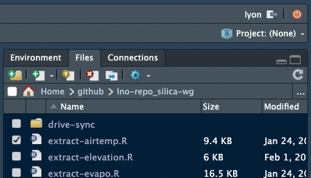
Once the box is checked, click the gear icon then click the “Export…” option (about halfway down). In the image below this option is surrounded by a red square
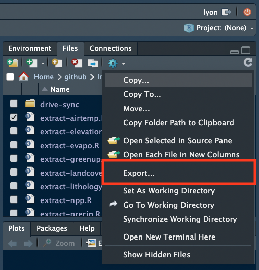
In the resulting box you can choose to rename the file before downloading to your local computer. After renaming the file (or keeping its original name), click the “Download” button and the download should begin after a moment.
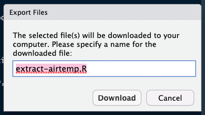
These methods are effective for one or a few files being up/downloaded to the same directory but can quickly become cumbersome if you want to handle many files or a few files to several different folders.
Via sFTP Software
If you want to upload or download many files we recommend using sFTP software (secure File Transfer Protocol). We use Cyberduck internally, though there are alternatives like WinSCP. Both programs are free to use and more than capable of uploading and download many files to/from the server quickly and easily.
Once you have installed one of these programs, you can sign in to the server from the sFTP program using your server username and password and can then upload or download files from your personal computer in the same way as you would move files among folders within your personal computer.
Cyberduck Set Up Tutorial
Here we briefly demonstrate how to set up a connection between Cyberduck and NCEAS’ Server. Note that you must have already installed Cyberduck to follow these steps.
- In the Cyberduck window, click the “Open Connection” button with an icon of a globe with a plus sign. In the below image the button has a red square around it.
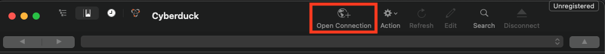
In the resulting window, input the following information:
- “Server” – “aurora.nceas.ucsb.edu”
- “Username” – whatever your username on the server is
- “Password” – your password to the server
- “Port” – change it to “22” (it will start as “21”)
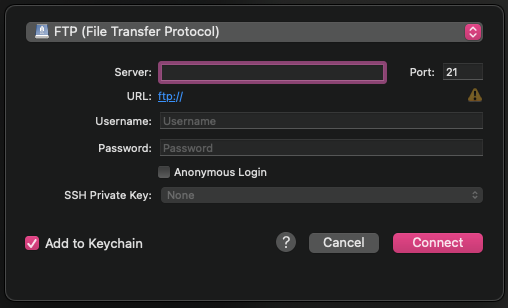
- Also, click the dropdown menu at the top that says “FTP (File Transfer Protocol) and select”SFTP (SSH File Transfer Protocol)” from the set of available options.
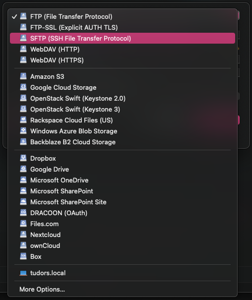
- Once you’ve input the above information, click the “Connect” button and you should have access to the server! You can now click around the different folders you have access to and upload or download from there.
- To download: click the files/folders that you want and they should begin downloading to your personal computer
- To upload: drag and drop the files where you want them
Via the Command Line
If you are more comfortable with a CLI (Command Line Interface) you can also use that method of uploading/downloading. The command line includes the Terminal pane in RStudio, Terminal app for Macs, PuTTY, and gitBash among others. CLI can be a great tool to leverage filenames or types to filter specific files you would like to upload / download. Text in code chunks below are command line commands and any bracketed text [like this] should be replaced by some user-specific information before running.
This portion of the tutorial is focused on using the command line to interact with the server. That said, if you’re interested in the command line more generally or for other purposes, please reach out to our team!
CLI Option A: scp
The scp command can be used to upload a file or folder from your computer to the server.
1A. Navigate to the folder on your computer containing the file(s) you want to upload
cd [folder]- Note that if the folder name has spaces you’ll need to “escape” the space by using a backslash (
\)
cd [folder\ name]2A. Now you can upload that file to the server!
scp [file_name] [user]@aurora.nceas.ucsb.edu:/[path/to/destination_folder/]If instead you’d like to upload all of the files in a folder, do the following:
1B. Navigate to the folder containing the folder on your computer you want to upload (using cd)
cd [folder]2B. Use scp with the recursive option (-r) to upload all of the files in that folder
scp -r [folder] [user]@aurora.nceas.ucsb.edu:/[path/to/destination_folder/]- Note that this uploads all of the files in the folder not the folder itself so you may want to create a new folder on the server to upload your local folder’s contents into.
Finally, note that you can also download files from the server to your local machine by simply switching the order of the machines:
scp [user]@aurora.nceas.ucsb.edu:/[path/to/server_folder/file_name] [local_folder] CLI Option B: sftp
The get command can be used to download a file.
- Connect to the server
sftp [user]@aurora.nceas.ucsb.edu:/home/sharesYour prompt at the shell should now have switched to sftp> and although it is the same window you are now looking at the files on the server! Try it by typing the ls command at the prompts. This will list all the files and folders within the shares folder on Aurora.
- Enter your group’s folder in the
sharesfolder
cd [your_group_folder]- If needed, continue using
cdto get to the subfolder you want to access. Remember to “escape” any spaces in the folder name with backslashes!
cd [subfolder]Note that most of the bash command will work, so you can use ls to list files and pwd to check your current path.
- When you are in the folder containing the file(s) you want, download the file you want
get [file_name_server]- You can also upload a local file to the server by using the
putsFTP command
put [file_name_local]- When you are done downloading, close the connection to the server
exit